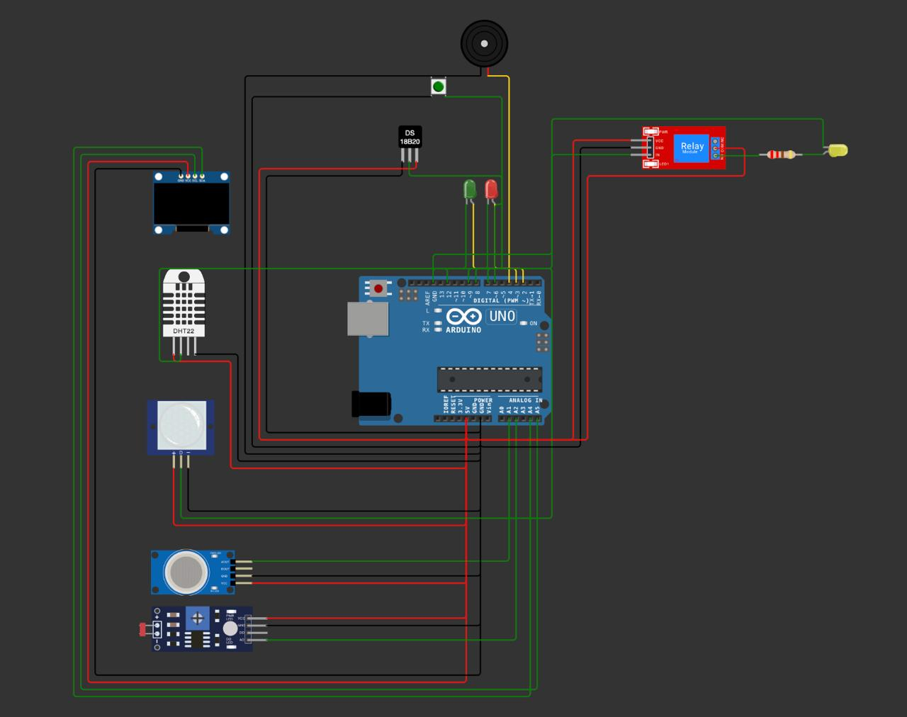

Smart Plant Monitor
A smart greenhouse / plant-care monitoring system that measures environmental and soil parameters, applies threshold-based logic, and helps prevent typical plant failures (overwatering, dryness, low light).
Key idea: turn sensor data into clear decisions (OK / Warning / Critical) and keep plant care stable.
Project Card
| Course | Robotics |
|---|---|
| Topic | Smart Greenhouse / Plant Monitoring System |
| Group | 4232 |
| Team | Nikita Petkuns, Anastasija Vostrikova |
| Location | Riga • 2025 |
| Repo | SmartPlantMonitor |
Goals
- Monitor soil moisture and basic environment conditions.
- Detect abnormal states using thresholds and rules.
- Provide clear output (display / LED / alerts).
- Document the system (architecture + testing).
Quick summary
SmartPlantMonitor is designed as a practical robotics prototype: sensors → microcontroller → decision logic → user feedback. The project focuses on reliability, clarity of status, and evidence-based testing.
Problem statement
Plant care is often reactive: problems are noticed too late (dry soil, overheating, insufficient light). A smart greenhouse monitor should collect data continuously, reduce uncertainty, and support timely decisions.
Main problems
- Inconsistent watering and missed routines.
- Environment changes (temperature / humidity) not tracked.
- No clear criteria when intervention is needed.
System contradictions
- Need more control vs limited attention of the user.
- Better accuracy vs higher cost/complexity of sensors.
- More automation vs safety and predictability.
System architecture
High-level flow: Sensors → Controller → Rules → Output.
Inputs (sensors)
- Soil moisture sensor (watering decision).
- Temperature & humidity sensor (environment stability).
- Light sensor (low light detection).
- (Optional) Gas / motion / additional modules if used.
Outputs (feedback)
- Display status (OK / Warning / Critical + values).
- LED indicators / buzzer alerts.
- (Optional) Relay for pump/fan/lighting.
Decision logic
Read sensors → filter/noise reduction → compare to thresholds → assign status → show on display + trigger alerts/actions.
If you want, we can add a simple block diagram image later (PNG) and place it here.
System architecture
Full hardware architecture of the Smart Plant Monitor system, including sensors, controller, outputs and actuators.
Sensors → Arduino UNO → decision logic → visual/audio alerts and actuators.
Hardware & photos
Photos from the Smart Plant Monitor prototype.
Arduino control code
Core firmware that reads sensors, applies decision logic, updates display, and triggers alerts and actuators.
// Smart Plant Monitor - Arduino Code
#include
#include
#include
// -------- PIN DEFINITIONS --------
#define LED_PIN 2
#define BUZZER_PIN 3
#define BUTTON_PIN 4
#define LDR_PIN 5
#define DHT_PIN 6
#define MOTOR_PIN 7
#define TRIG_PIN 8
#define ECHO_PIN 9
#define GREEN_LED 10
#define YELLOW_LED 11
#define RED_LED 12
// -------- DHT --------
#define DHTTYPE DHT11
DHT dht(DHT_PIN, DHTTYPE);
// -------- LCD --------
LiquidCrystal_I2C lcd(0x27, 16, 2);
// -------- SETTINGS --------
#define TEMP_MILD 30
#define TEMP_HIGH 35
#define HUM_MILD 40
#define HUM_LOW 30
#define DIST_LIMIT 20
// -------- VARIABLES --------
int problemLevel = 0;
// -------- FUNCTIONS --------
long readDistanceCM() {
digitalWrite(TRIG_PIN, LOW);
delayMicroseconds(2);
digitalWrite(TRIG_PIN, HIGH);
delayMicroseconds(10);
digitalWrite(TRIG_PIN, LOW);
long duration = pulseIn(ECHO_PIN, HIGH, 30000);
if (duration == 0) return -1;
return duration * 0.034 / 2;
}
void setup() {
pinMode(LED_PIN, OUTPUT);
pinMode(BUZZER_PIN, OUTPUT);
pinMode(BUTTON_PIN, INPUT_PULLUP);
dht.begin();
lcd.init();
lcd.backlight();
lcd.print("Greenhouse Sys");
delay(2000);
lcd.clear();
}
void loop() {
float temp = dht.readTemperature();
float hum = dht.readHumidity();
long distance = readDistanceCM();
// Decision logic
if (distance > 0 && distance < DIST_LIMIT) {
problemLevel = 2;
} else if (temp > TEMP_HIGH || hum < HUM_LOW) {
problemLevel = 1;
} else {
problemLevel = 0;
}
}
The code implements threshold-based decision logic with multiple sensor inputs and output channels.
- Sensors are read continuously in the main loop.
- Values are compared against predefined thresholds.
- System state is reflected via LEDs, LCD, buzzer and relay.


Core components
- Microcontroller board (Arduino / similar).
- Soil moisture sensor.
- Temperature & humidity sensor (DHT22).
- Light sensor (LDR).
- Display (LCD/OLED).
Notes
- Sensor calibration is required.
- Stable power improves reliability.
- Pin mapping should be documented.
Wokwi Simulation
Interactive simulation of the Smart Plant Monitor system. You can view the full wiring diagram and run the Arduino code online.
Opens in a new tab • Live circuit + firmware
Software logic
The system works as a cyclic controller: read → evaluate → output. Threshold logic is transparent and easy to test.
Algorithm (simplified)
- Read soil moisture, temperature/humidity, light.
- Filter noise (moving average / debounce if needed).
- Compare against thresholds.
- Assign status: OK / Warning / Critical.
- Display values + status, trigger alerts/actions.
Example statuses
| OK | All parameters within target range |
|---|---|
| Warning | Approaching limit (user attention recommended) |
| Critical | Out of range (alert / intervention needed) |
Tip: keep thresholds and messages in one place to simplify tuning.
If you want: we can add a short code snippet section and link to your Arduino sketch folder.
Testing
Short, evidence-based testing makes the project look professional.
Test cases
- Dry soil → system shows Warning/Critical.
- Moist soil → system returns to OK.
- Low light → warning shown on display.
- Sensor disconnection → safe handling / clear message.
Metrics
- Stability of readings (no random jumps).
- Reaction time to changes.
- Correct threshold behavior.
- Usability of messages (clear actions).
Results
Final state: working prototype, documented logic, clear presentation, and testable behavior.
What works
- Stable sensor polling
- Status shown clearly
- Threshold-based alerts
Limitations
- Calibration needed for precision
- Prototype enclosure not final
- Limited long-term dataset
Next steps
- Data logging (SD/cloud)
- Web/mobile dashboard
- More sensors (pH/CO₂)
Repository files
Recommended structure for a clean submission:
| index.html | This presentation website |
|---|---|
| assets/ | Photos (prototype, wiring, display) |
| src/ | Arduino code / sketches |
| docs/ | Report PDF, diagrams, pinout |
| README.md | Short project description + how to run |
Tip: add a PDF report into docs/ and link it here when ready.